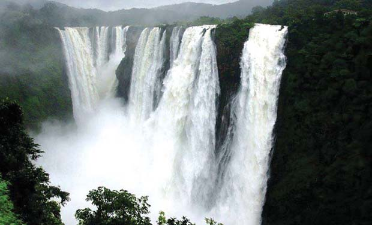

JOG falls shivamog

Jog Falls, Gerosoppa Falls or Joga Falls is the second highest plunge waterfall in India located near Sagara taluk, Shimoga district in the state of Karnataka.[1] It is a segmented waterfall which, depending on rain and season, becomes a plunge waterfall. The falls are a major tourist attraction and is ranked 131th in the world by the waterfall database. They are also known as the Gersoppa Falls or Jogada Gundi.[2]
The falls are located on the Uttara Kannada and Sagara border.

HOW TO REACH ?
Nearest Airport: Shilong
Nearest Railway Station:Shilong
Nearest Bus Stand:Shilong